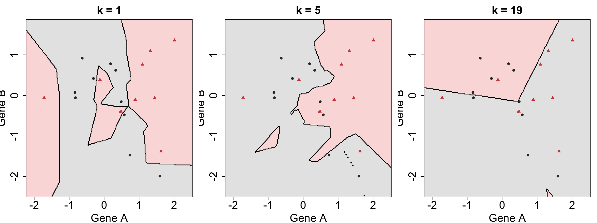
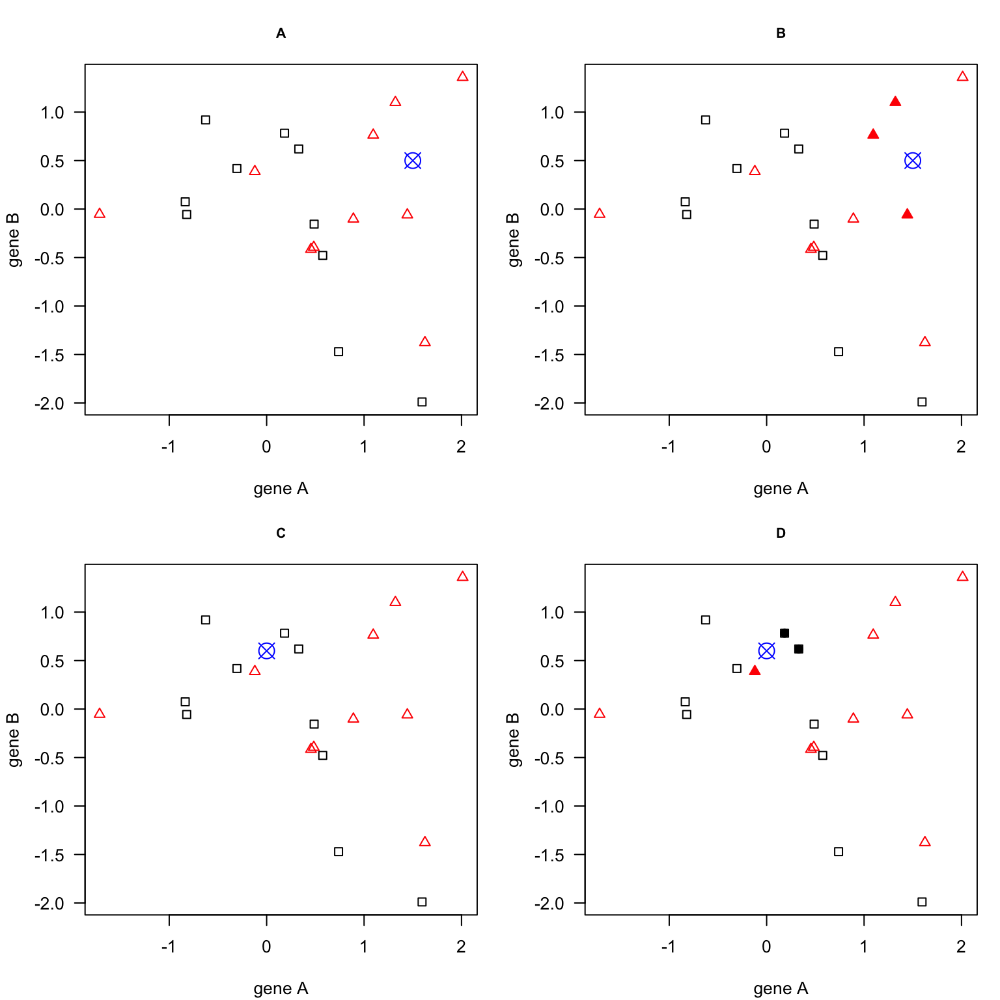

2 K-nearest neighbors (KNN)
Machine Learning for Life Sciences
K-nearest neighbors (KNN) is a simple, intuitive supervised learning algorithm that makes predictions based on the similarity between observations.
The underlying assumption is that observations with similar features are likely to have similar outcomes.
For example, consider a dataset containing gene expression measurements from patients with two different disease subtypes. If a new patient has an expression profile similar to patients belonging to one subtype, we might expect the new patient to belong to that same subtype.
KNN can be used for both classification and regression:
- KNN classification: The predicted class is determined by the most common class among the \(k\) nearest neighbors.
- KNN regression: The predicted value is typically the average of the target values among the \(k\) nearest neighbors.
Unlike many other machine learning algorithms, KNN does not explicitly estimate a set of coefficients or learn a decision boundary during training. Instead, it retains the training observations and uses them to make predictions when new observations are presented.
For this reason, KNN is sometimes described as an instance-based or lazy learning algorithm.
2.1 How does KNN classification work?
Suppose we have measurements of two genes, Gene A and Gene B, for a group of patients. Each patient belongs to one of two known disease subtypes.
We want to classify a new patient using their expression levels of these two genes.
The KNN algorithm follows these steps:
- Choose the number of neighbors (\(k\)). This determines how many nearby training observations will contribute to the prediction.
- Calculate distances. Measure the distance between the new observation and each observation in the training dataset.
- Identify the \(k\) nearest neighbors. Select the \(k\) training observations with the smallest distances.
- Determine their classes. Examine the known class labels of these neighbors.
- Make a prediction. Assign the new observation to the class most frequently represented among its \(k\) nearest neighbors.
For example, with \(k=3\):
- If all three nearest neighbors belong to subtype A, the new patient is classified as subtype A.
- If two neighbors belong to subtype B and one to subtype A, the new patient is classified as subtype B.
This is called majority voting.
Using an odd value of \(k\) can reduce the possibility of ties in binary classification, although it does not eliminate ties in multiclass classification.

2.2 Measuring similarity: distance metrics
To identify the nearest neighbors, KNN needs a way to quantify how similar or different two observations are. The most commonly used distance measure for numerical features is Euclidean distance. For two observations, \(i\) and \(j\), described by \(p\) features, Euclidean distance is defined as:
\[ d(i,j)=\sqrt{\sum_{m=1}^{p}(x_{im}-x_{jm})^2} \]
where \(x_{im}\) and \(x_{jm}\) represent the values of feature \(m\) for the two observations.
For a dataset containing only two features, such as Gene A and Gene B, this corresponds to the straight-line distance between two points in a two-dimensional scatterplot.
Other distance measures are possible, including Manhattan and Minkowski distances. The choice of distance metric can influence which observations are considered nearest neighbors and therefore affect the predictions.
2.3 Choosing the number of neighbors (k)
The number of neighbors, \(k\), is a hyperparameter: a setting that must be chosen before making predictions, rather than a parameter estimated directly from the training data.
Its value influences how flexible the classifier is.
- Small k (e.g., k = 1): Predictions depend on very few observations. The model can produce complex, irregular decision boundaries and may be sensitive to noise or unusual training observations.
- Large k: Predictions depend on more observations. Decision boundaries become smoother, but the classifier may overlook important local patterns.
The figure below illustrates how changing (k) affects the decision boundaries for the same training dataset. With (k=1), the classifier closely follows individual observations. As (k) increases to 5 and 19, the decision boundaries become progressively smoother, and local patterns have less influence on predictions.
This illustrates the relationship between model complexity and generalization: small values of (k) increase the risk of overfitting, while excessively large values increase the risk of underfitting.
There is no universally optimal value of (k). The best choice depends on the dataset, including sample size, feature distributions, noise, and the complexity of the relationships between features and outcomes.
We can select (k) by comparing the predictive performance of different values using validation data or cross-validation.
We will return to this when discussing hyperparameter tuning.
2.4 Why is feature scaling important?
KNN relies on distances between observations. Consequently, the scale of the input features directly affects which observations are considered nearest neighbors.
Consider a dataset containing:
- Age, measured in years (e.g., 20–80).
- Gene expression, measured on a scale from 0 to 10.
- Protein concentration, measured in units ranging from 0 to 10,000.
Without scaling, features with larger numerical ranges may dominate the distance calculation, even if they are not more important for prediction.
A common solution is standardization, where each feature is transformed by subtracting its mean and dividing by its standard deviation:
\[ z=\frac{x-\mu}{\sigma} \]
This gives features a mean of zero and a standard deviation of one in the data used to fit the transformation.
Other scaling approaches, such as min-max normalization, may also be appropriate depending on the data.
Important: Scaling parameters must be estimated from the training data and then applied to validation, test, or new observations. Estimating them using the full dataset before splitting introduces information leakage.
During cross-validation, scaling must be fitted separately within each training fold. Machine learning pipelines can automate this process.
2.5 Advantages and limitations of KNN
Advantages
- Simple to understand and implement.
- Makes relatively few assumptions about the relationship between features and outcomes.
- Can capture nonlinear decision boundaries.
- Can be used for both classification and regression.
Limitations
- Predictions may be computationally expensive for large training datasets because distances to many observations must be calculated.
- Sensitive to feature scaling and the choice of distance measure.
- Sensitive to irrelevant features and noisy observations.
- Performance may deteriorate with many features, a problem related to the curse of dimensionality.
- Choosing an appropriate value of \(k\) is important for good predictive performance.
The curse of dimensionality is particularly relevant in life sciences, where datasets may contain thousands of molecular features but relatively few samples.
As the number of features increases, distances between observations can become less informative, making it harder to identify genuinely similar samples.
Feature selection or dimensionality reduction may help, but these operations must be incorporated correctly into the model training and validation workflow.
2.6 Key takeaway
KNN predicts outcomes from nearby training observations. Its simplicity makes it a useful introduction to supervised learning, but its performance depends strongly on the choice of \(k\), the distance metric, feature scaling, and the structure of the data.
KNN also provides a natural example of why we need model evaluation and hyperparameter tuning: different choices of \(k\) can produce different predictions, and we need a systematic way to determine which choice generalizes best to new data.